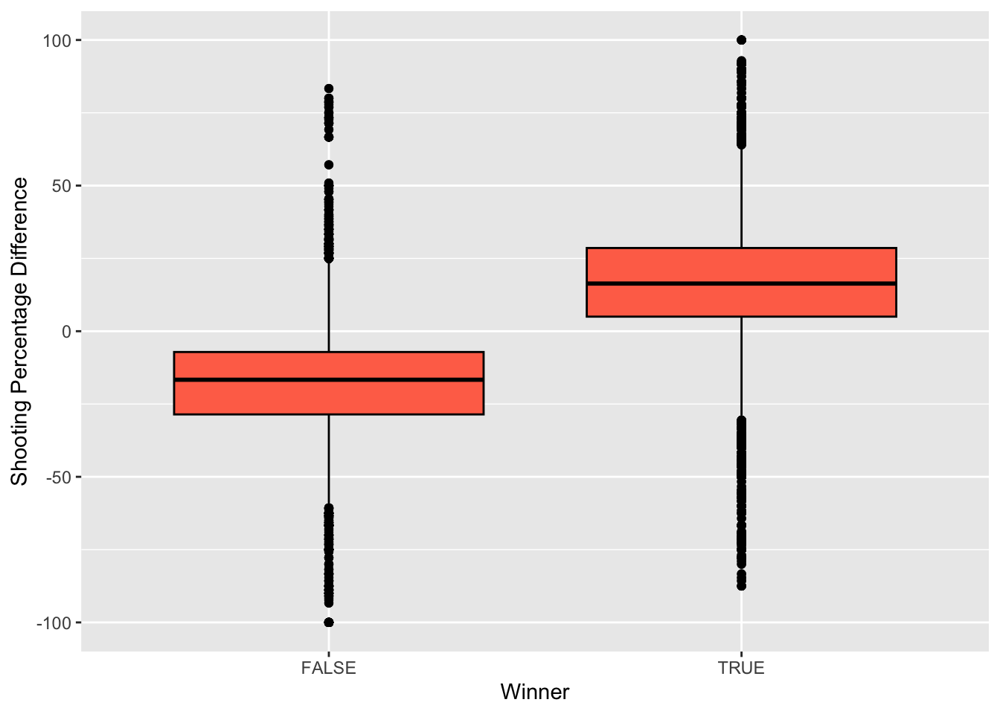
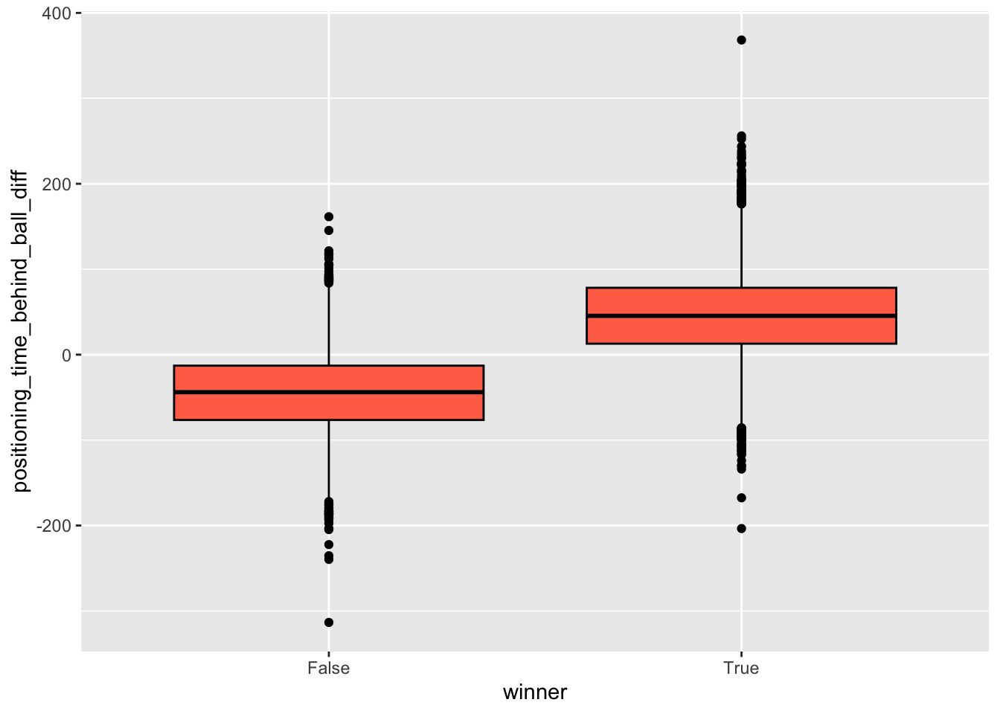

Write_Up
Project Introduction:
Over the past decade or so, the world of esports and competitive video-gaming has seen a drastic boom in popularity. One of the most popular esports is Rocket League, which is essentially soccer played in cars. I am a fan of professional Rocket League, and I also have played the video game competitively as a member of the Esports team here at St. Lawrence.
Rocket League is a video game that can be played on a PC, Xbox, PlayStation, and Nintendo Switch. Much like regular soccer, there is one ball and two goals, and you win by scoring more goals than your opponent. The game is played with a randomly assigned “blue” and “orange” team, and each player controls one rocket-powered car. There are different game modes within the game, but for the purposes of this project I will be focusing on the 3v3 game-mode, which is where the majority of competitive play and money is. Rocket League was released by Psyonix on July 7th, 2015.
Despite being released in 2015, the competitive and professional side of the video game is still growing to this day. In 2022, the total prize pool given out by Psyonix alone reached $6,000,000, and there are other non-Psyonix hosted tournaments with cash prizes as well. This past year the video game has expanded to new regions, including Asia-Pacific North, Asia-Pacific South, and Middle East/North Africa. Players are constantly pushing the skill ceiling to re-define what it means to be the best in the world. With this comes constantly changing strategy and tactics and makes for an even more thrilling viewer experience.
Much like with popular sports such as baseball and football, there is a growing analytical side for assessing performance of some of the most popular esports. These are used to help strategize, coach, and improve competitive gamers’ performances. While analytics are useful to some competitive video games, Rocket League is a relatively new esport, and the statistical side of the game is widely unexplored. As both a fan and a player of Rocket League, and somebody with an interest in statistics and data science in general, I was curious to see if statistical/machine learning algorithms could be applied to predicting game outcomes (whether the team wins or loses the game). These findings could potentially help form different strategies among professional teams and could even help coaches to decide what areas to put more of a focus on going into games.
For this project, I only explored the three player vs. three player game-mode and looked at a dataset collected on the main professional competition that runs throughout the year; RLCS (Rocket League Championship Series). All of the data was obtained using octane.gg and ballchasing.com and spans over the course of multiple RLCS events throughout the 2021-2022 season. The dataset includes information on the teams in the match, team statistics (such as saves, assists, shots, etc.), boost statistics (boost used, boost stolen, time spent without boost, etc.), and movement statistics (time spent moving slow, time spent in each team’s half, time spent in air, etc.). Each game in the dataset had two rows, one for the statistics for the losing team and one for the statistics of the winning team.
Using this dataset, I created net variables by subtracting all of the blue teams’ stats from all of the orange team’s stats. I did this in order to see for which variables having more or less than your opponent would be positively associated with winning. (For example, are you more likely to win the match if your team records more or less saves than your opponent.) I utilized Lasso Regression and Random Forest models in order to try and predict whether teams would win/lose their match based on the net variables in the dataset.
Investigative Plots: Before creating any models to try to predict game outcome, I did some exploratory plotting of different individual variables in order to get an idea of what variables may have strong correlation with winning games. Unfortunately, out of the 17 variables that I investigated, the majority did not appear to have strong correlation with winning games. However, there were some interesting observations that I made; one in particular that surprised me was that movement speed appears to have little to no correlation to match outcome. As a player myself, we are always coached that keeping your speed as high as possible around the field is vital in order to become a high level player. But, in this dataset of only professional matches, that does not appear to be the case.
Two variables to note that provided some clear correlation to game outcome were “core_shooting_percentage_diff” (difference in percentage of shots that were “on goal”), and “positioning_time_behind_ball_diff” (difference in amount of time each team spent goal side of the ball).
core_shooting_percentage_diff plotted against winner:

postioning_time_behind_ball_diff plotted against winner:

I expected shooting percentage to be a strong predictor but I was surprised to find such a high number of teams that shot with 70-80% higher accuracy than their opponent still managed to lose games. I was also surprised to find such a clear correlation between spending more time behind the ball being so positively associated with winning games. But, it does make sense that if the ball spends more time near your opponent’s goal rather than your goal, that would lead to positive results.